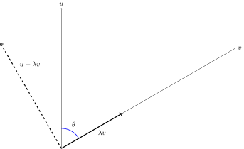

Tal og Lineær Algebra
Niels Lauritzen

»
1 Om tal og vektorer i planen
1.1 Det mirakuløse tal nul
1.2 De naturlige tal
1.3 De hele tal
1.4 De rationale tal
1.5 De reelle tal
1.6 Vektorer i planen
1.7 Cosinus og sinus til en vinkel
1.8 Projektionen af en vektor på en anden vektor
1.9 Cosinus og sinus for summen af to vinkler
1.10 Opgaver
»
2 De komplekse tal
2.1 Mandelbrotmængden
2.2 Regneregler
2.3 Geometrisk fortolkning og polær form
2.4 Andengradsligningen og højeregradsligninger
2.5 Om komplekse tal og periodiske fænomener
2.6 Opgaver
»
3 Lineære ligninger
3.1 En ligning med en ubekendt
3.2 Flere ligninger og flere ubekendte
3.3 Gauss elimination
3.4 Anvendelser
3.5 En meget vigtig matematisk sætning
3.6 Opgaver
»
10 Anvendelser af lineær algebra
10.1 Principal component analysis
10.2 Opgaver
»
11 Regnemaskinen Wolfram alpha
11.1 Computational engine